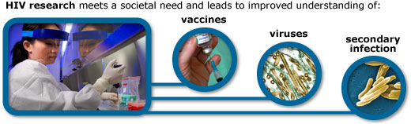

Science responds to the needs and interests of the societies in which it takes place. A topic that meets a societal need or promises to garner the attention of society is often more likely to be picked up as a research topic than an obscure question with little prospect for a larger impact. For example, over the last 15 years, science has responded to the HIV/AIDS epidemic with a massive research effort. This research has addressed HIV in particular, but has also increased our understanding of viral infections in general. Society's desire to slow the spread of HIV and develop effective vaccines and treatments has focused scientific research, which improves our understandings of the immune system and how it interacts with viruses, drugs, and secondary infections. Science is done by people, and those people are often sensitive to the needs and interests of the world around them, whether the desired impact is more altruistic, more economic, or a combination of the two, as demonstrated in the example below.

THE COLOR MAUVE
In 1856, while trying to make a synthetic version of the anti-malarial drug quinine, the young chemist William Perkin spied a glint of purple. He had stumbled upon a dye which produced a new color: mauve. The color was an instant hit, adorning women across Europe and enriching its inventor. This attention attracted other chemists hoping to make a similar impact (and a buck) — and the field of organic chemistry took off, buoyed by a fashion craze. The whims of society may sometimes seem frivolous; yet, even such trivial changes may end up changing the course of science.